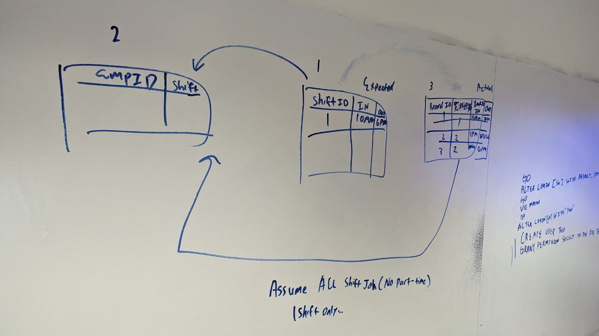
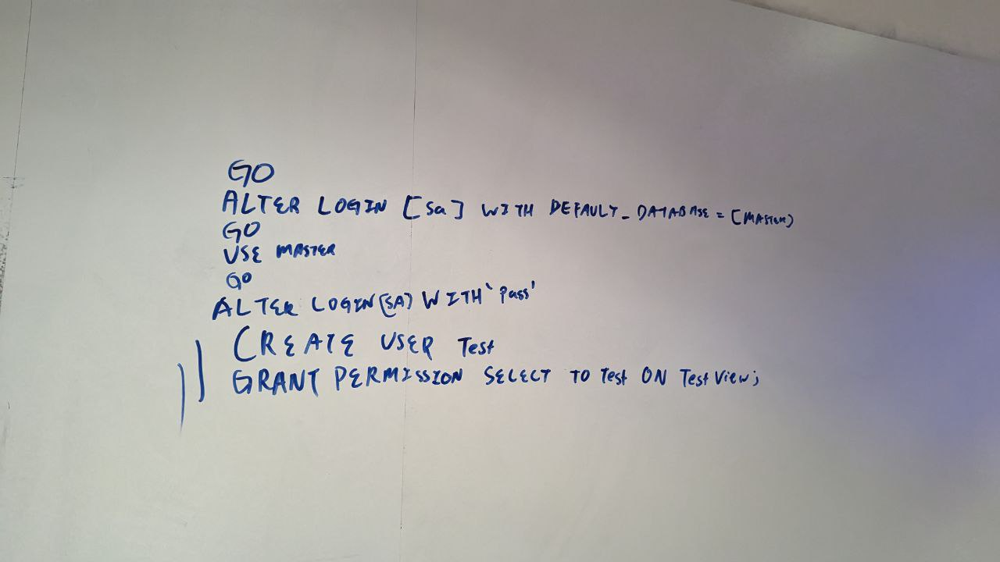

T-minus 1 week to the hackathon!
This week, we discussed the implementation of the database and related functions.
The database we have decided to go with is Microsoft SQL Server Management Studio (MSSQL).
We decided to go with this database management system as we have used it before, thus it is familiar to us and easier to use.
Below is a picture of the tables that are to be implemented for the database.
We have 3 tables: The Employee table, Shift table and Records table.
The Employee table includes information such as the name of the employee and the shift of the employee.
The Shift table stores the different shifts as individual IDs. For example, ShiftID 1 stores the ShiftIn and ShiftOut time as 09:00:00 and 17:00:00 respectively.
The records table is responsible for taking down the employees' actual time in and time out time into work.
The implementation of this database assumes that there are no part-timers, only full-timers.
Below is an image of the command that will be used to grant users administrative permissions.
For my part of the assignment, which is to insert data into MSSQL through Python, some progress has been made.
I have been able to retrieve and insert data into the tables using the pyodbc module!
This module aims to make accessing ODBC databases simple.
That's all for Week 4, looking forward to Week 5!